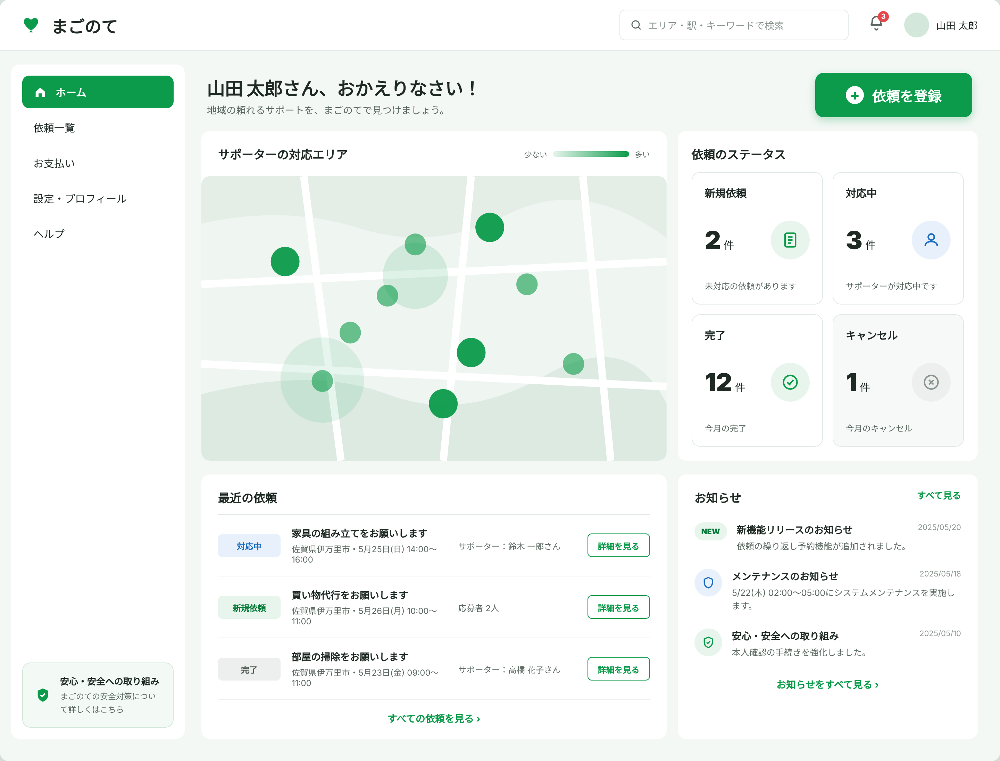
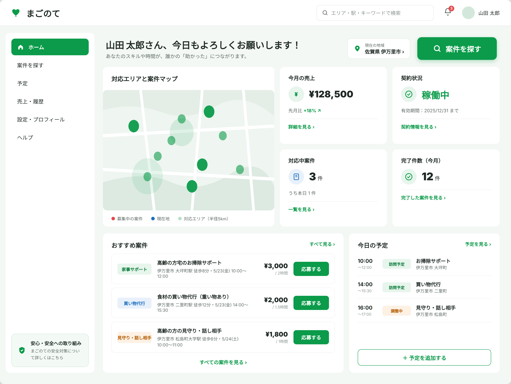

佐賀県伊万里市エリア限定
佐賀県伊万里市の実家に、
佐賀県伊万里市の実家に、
地域の手を。
庭の草、畑のこと、家のなかの片づけ。
帰省のたびに増える用事を、伊万里市に住む人がお手伝いします。
51,664人
伊万里市の人口
33.8%
65歳以上の割合
（約3人に1人）
（約3人に1人）
出典：住民基本台帳（2025年1月1日現在）
ご意見を聞かせてください
所要1分ほど｜現在は準備中のサービスです
01こんなこと、ありませんか
電話では「大丈夫」と言うけれど。
—帰省するたび、庭の草が伸びたままになっている
—重いものの買い物が、だんだん大変そうに見える
—畑仕事を、いまも一人で続けている
—何かを頼める相手が、近くにいないらしい
近所に頼むほどでもない。業者を呼ぶほどでもない。
その「ちょうどいい手」が、伊万里市には足りていません。
02お手伝いできること
暮らしの小さな用事から。
農作業の手伝い草取り・収穫・運搬
掃除室内・水まわり
庭のお手入れ草刈り・剪定
買い物代行日用品・食料品
電球交換・修繕高いところの作業
見守り・話し相手定期的に顔を見に
上記以外のご相談もお受けします。どんな用事が多いのかを知りたいので、アンケートで教えてください。
03料金の考えかた
金額は、作業が終わってから決められます。
はじめに料金表を見て悩まなくていいように。終わったあとに、納得して決める形をとります。
依頼するとき
作業が終わったあと
決めません
やってほしいことだけを
伝えます
伝えます
あなたが選ぶ
お礼として渡す金額を
そのとき決めます
そのとき決めます
選べる金額（500円から）
500円
1,000円
2,000円
3,000円〜
内容や時間に応じて、ご自身で決めていただきます。
なお、内容によっては無償でのお手伝いをお選びいただくこともできます。どちらを選ぶかは、依頼する方にお任せしています。
04安心していただくために
伺うのは、伊万里に住む人です。
伊万里市に事業所があります
遠くの会社が請け負うのではなく、同じ市内から伺います。
本人確認を行います
登録時に確認の手続きを行ったうえで、作業にあたります。
進み具合が画面で見えます
離れていても、依頼した作業がいまどうなっているか確認できます。
05画面のイメージ
離れていても、見えている。
依頼の状況、伺うスタッフ、完了の報告。ひとつの画面にまとまっています。

※ 開発中の画面です。実際の表示とは異なる場合があります。
06ご利用の流れ
4つの手順だけです。
01
登録する
お名前とご連絡先をお預かりします。
02
依頼する
やってほしいことと、希望の日をお伝えください。
03
スタッフが伺う
伊万里市内のスタッフが、ご実家へ向かいます。
04
完了を確認する
作業の報告を確認し、お礼の金額を選びます。
07アンケートのお願い
このサービスは、まだ準備中です。
つくるかどうかを決めるために、みなさんのお考えを聞かせていただいています。
お答えいただいた内容は、サービスを本当に始めるかどうかの判断にのみ使います。
ありがとうございました。
いただいたご意見は、まごのてを始めるかどうかの判断に使わせていただきます。
ご連絡先をご記入いただいた方には、サービスを開始する際にご案内します。
リリース中止の判断となった場合、いただいた情報等はすべて責任をもって削除いたします。
所要1分ほどで終わります。
08伊万里市にお住まいの方へ
誰かの「助かった」を、地域でつくる。
まごのては、伊万里市で一緒に動いてくれる人を探しています。
01農作業の手伝い、掃除、庭のお手入れなど
02無償の依頼と、チップのある依頼があります
03ご自身の予定に合わせて、できる範囲で

※ 開発中の画面です。
働く側としてご意見を送る
同じアンケートからお答えいただけます。